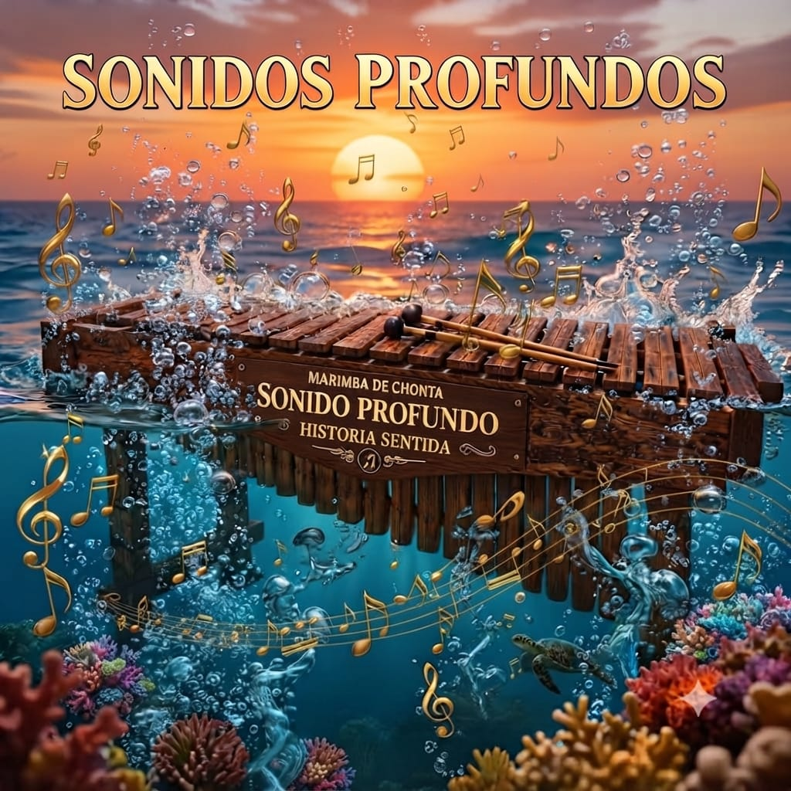
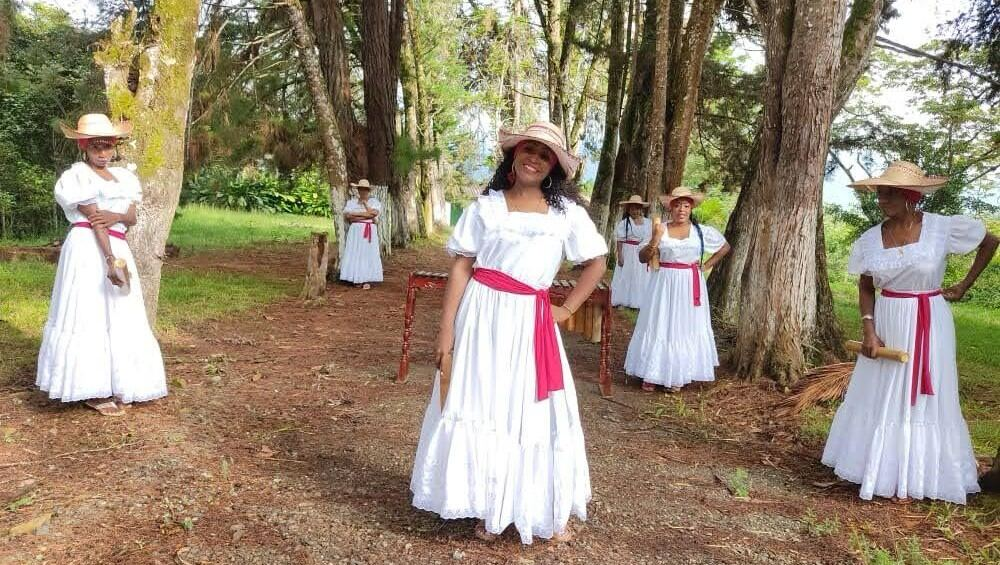
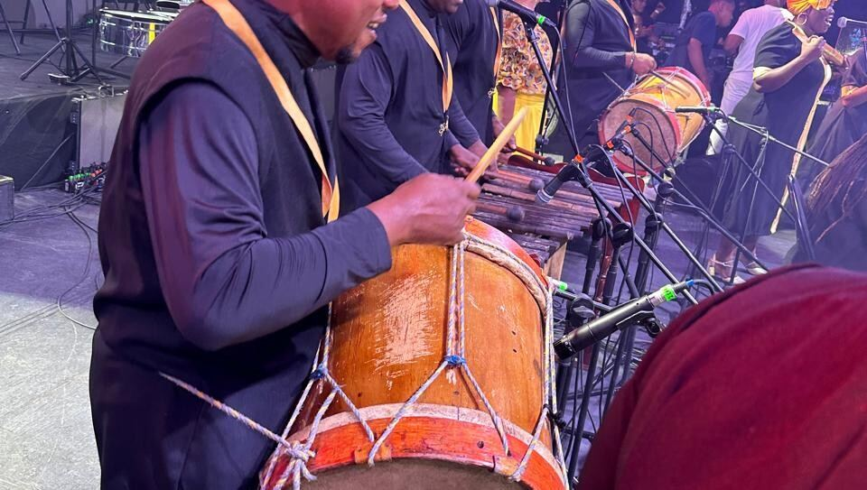
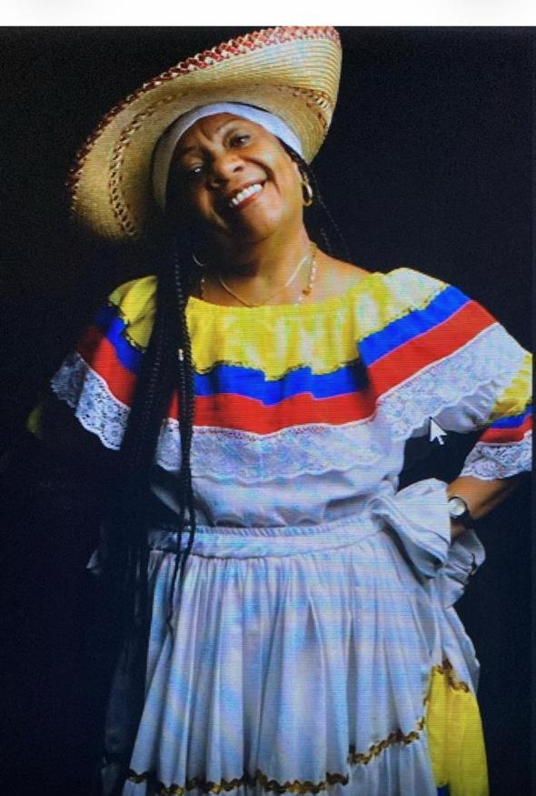
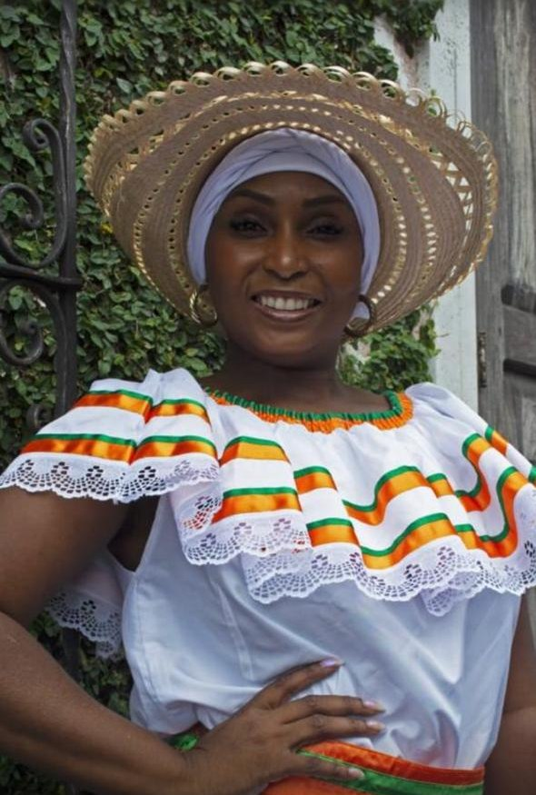
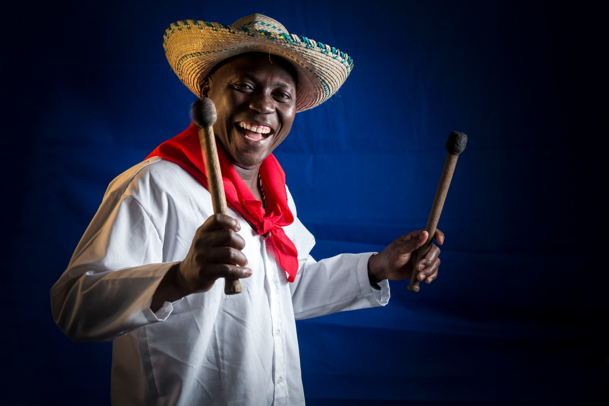
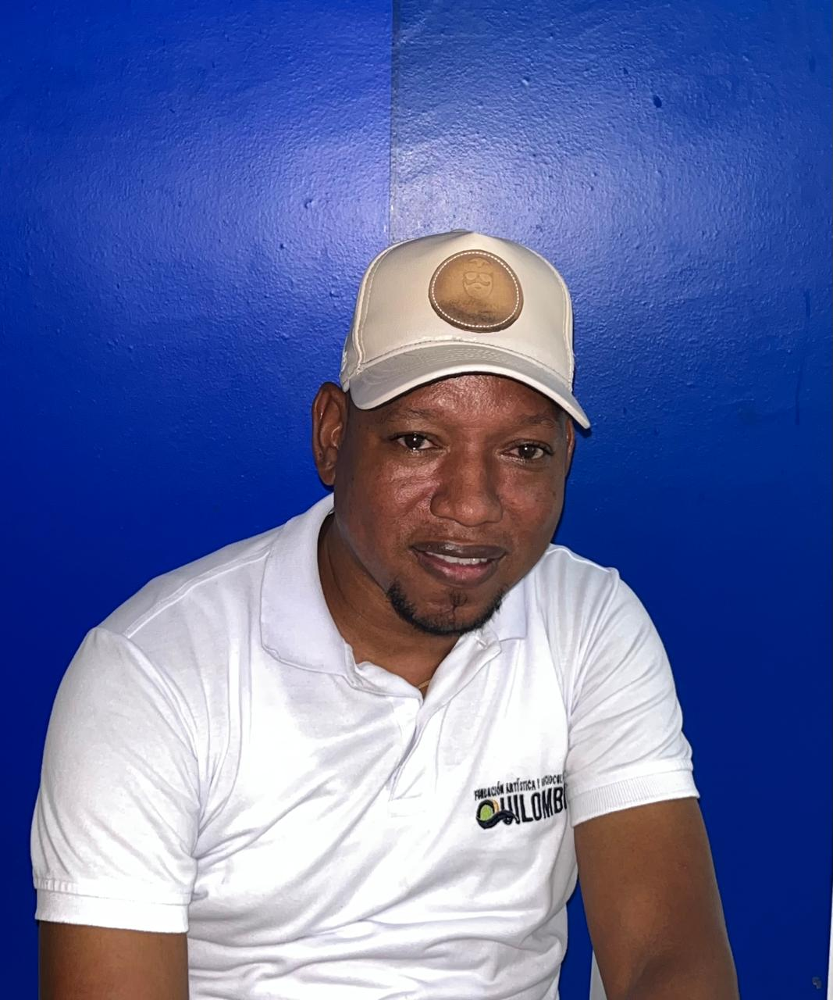
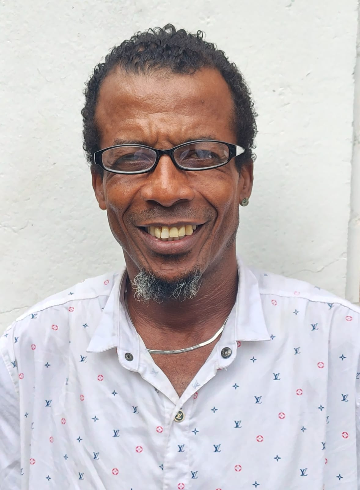
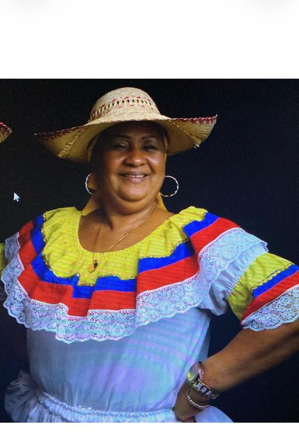

Música tradicional del Pacífico colombiano
Sonidos Profundosde Colombia
“La música nos permite hablar del pasado y el presente, es nuestro legado. ¡Es resignificación!”

Biografía
Una historia que nace del río
La agrupación nace de la unión de un grupo de paisanos y amigos procedentes de diferentes lugares de la región pacífica. Radicados algunos desde hace más de 25 años en Santiago de Cali, en 1999 se organizaron con la tarea cultural de preservar y difundir la música tradicional del Pacífico mediante la investigación e interpretación de ritmos como el currulao, la juga, el bunde, el alabao y la rumba.
Bajo la tutela y liderazgo de su directora María Elena Bermúdez, la agrupación grabó 6 trabajos disco gráficos, entre ellos “Quítate de mí escalera”, “La marea”, “Zapateando y coqueteado”, “La marimba enferma” y “Cuando río suena”.
Hoy, radicada en Cali, la agrupación le apuesta a la juventud y a la innovación mediante el relanzamiento de su tema bandera, sin olvidar sus raíces ni su labor social: sembrar el legado musical y cultural en los niños, niñas y jóvenes del litoral pacífico.
Por temas legales, la agrupación adoptó el nombre de Sonidos Profundos de Colombia; sin embargo, seguimos siendo el mismo proyecto musical, con la misma esencia y el mismo compromiso: el 100 % de sus integrantes son los mismos músicos que durante muchos años hicieron parte del reconocido Grupo Socavón. Cambia el nombre, pero permanecen las mismas voces, los mismos músicos y la misma pasión por nuestra música.

Propuesta artística
Catorce voces, un mismo latido

Un espectáculo de 1 hora y 30 minutos (o 10 canciones) donde Sonidos Profundos difunde la música tradicional del Pacífico interpretando sus grandes éxitos, con el sonido inigualable de la marimba de chonta, el sonar de los cununos, el adornar del guasá y la imponencia del bombo.
La agrupación está conformada en su totalidad por 14 músicos oriundos del pacífico colombiano, de los cuales 6 son mujeres cantaoras que preservan esta tradición y han tomado la batuta de interpretar y vivir la música y cultura de su región.
- Currulao
- Juga
- Bunde
- Alabao
- Rumba
Este es el bello anochecer de Buenaventura
La agrupación
Integrantes






Palmares
Trayectoria y reconocimientos
En 2002, la agrupación participó en el VI Festival de Música del Pacífico Petronio Álvarez y logró llevarse 3 de los 5 premios en la modalidad de marimba: Primer lugar — Conjunto de Marimba, Primer lugar — Mejor canción inédita y Primer lugar — Mejor intérprete vocal.
-
2007
Encuentro Internacional de Expresión Negra — Premio Guachupé de Oro.
-
2010
Buenaventura — Orden Dimensión Pacífico.
-
2010
Esmeraldas, Ecuador — Mención de Honor.
-
2020
Cali, Valle del Cauca — Primer premio Cacique Petecuy a la industria musical local, categoría Folclor.
-
2024
Núcleo Urbano — Celebrando los 20 años a los integrantes de la Agrupación Sonidos Profundos, Como mejores artistas Folclóricos del Pacífico., con participación en el evento realizado en Lugar Deejavu, Medellín.
Discografía
Éxitos
Disponible en redes sociales y principales plataformas digitales.
Multimedia
Galería
Contacto